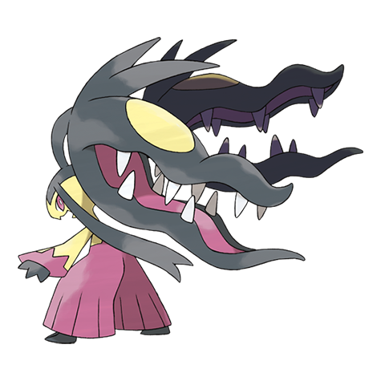
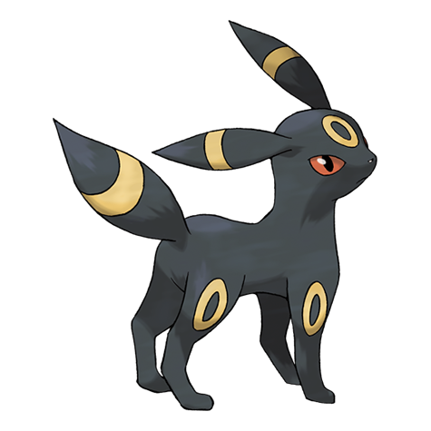
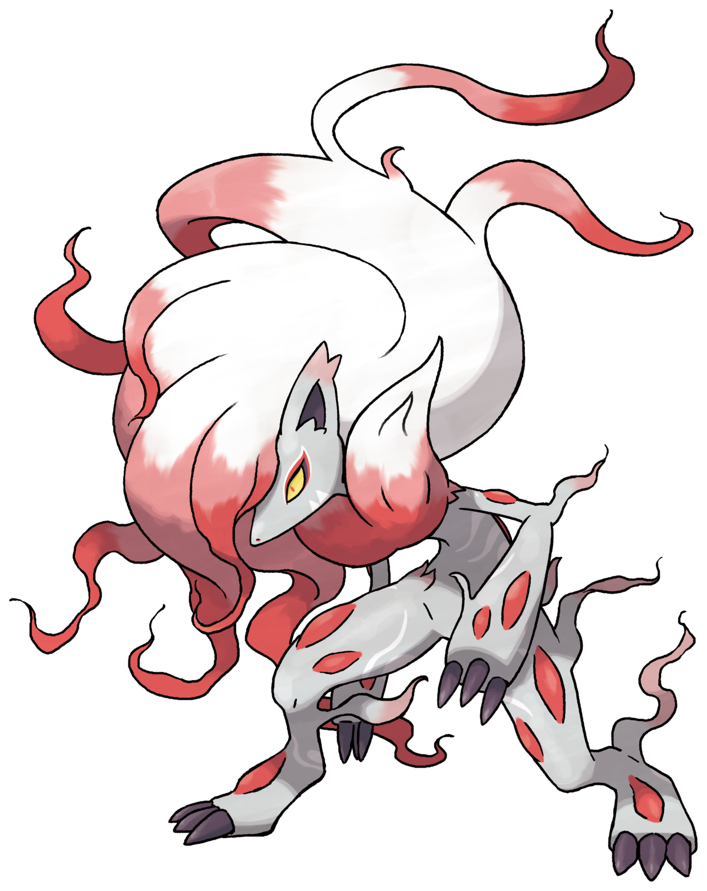
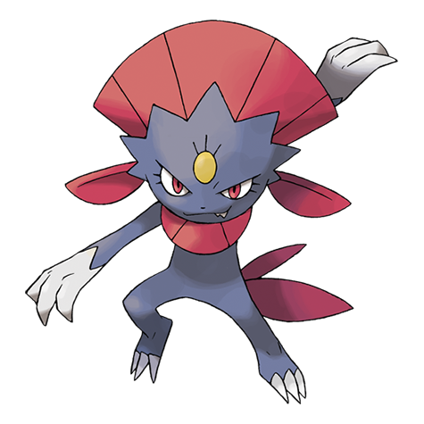
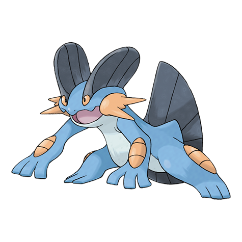
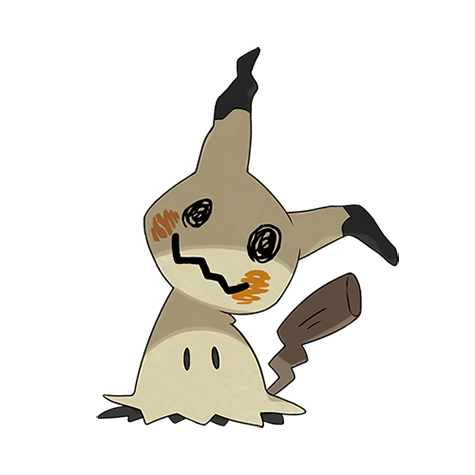

-
#303 Mega Mawile
Descrição
Tem uma disposição extremamente cruel. Ela agarra a presa com seus dois conjuntos de mandíbulas e as despedaça com força bruta.
-
#197 Umbreon
Descrição
Quando exposto à luz da lua, os anéis do seu corpo brilham fortemente e ganha um poder misterioso.
-
#571 Zoroark (hisui)
Descrição
Com seu pelo branco desgrenhado, parece a personificação da morte. Indiferente à sua própria segurança, Zoroark ataca seus inimigos com uma energia amarga tão intensa que dilacera seu próprio corpo.
-
#461 Weavile
Descrição
Alguns Weavile viajam em grupos de quatro ou cinco, deixando sinais uns para os outros em árvores e pedras. Eles derrubam suas presas com ataques coordenados.
-
#260 Swampert
Descrição
Os braços de Swampert são duros como pedra. Com um golpe, eles podem derrotar seus inimigos. Este Pokémon faz seu ninho em belas praias.
-
#778 Mimikyu
Descrição
Este Pokémon vive em locais escuros, intocados pela luz solar. Quando aparece diante dos humanos, ele se esconde sob um pano que lembra um Pikachu.